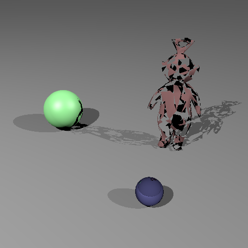
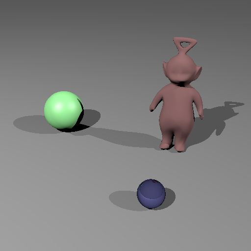
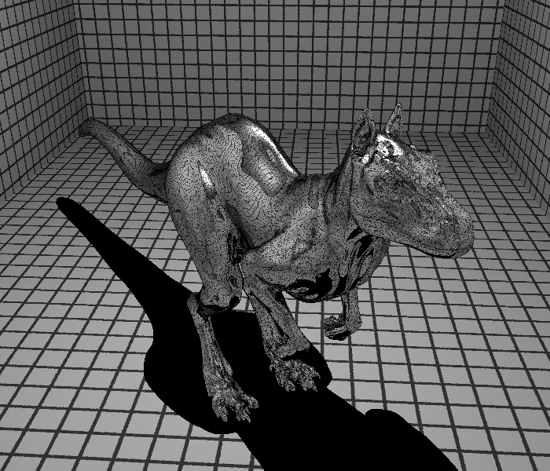
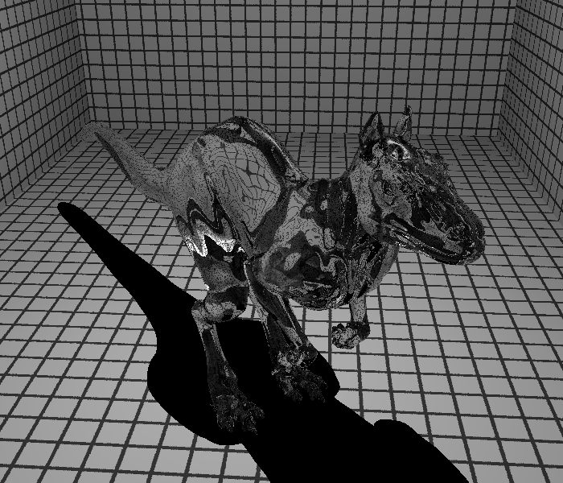

**Mondes 3D TD2 - Moze Jonathan**
Calcul d'intersection
=========
Fonction IntersectFace
------------------
Cette première partie concerne l'intersection de notre rayon avec un triangle. Il a suffit d'implémenter l'intersection vu en cours. Dans un premier temps nous avons utilisé
la normale de la face.
Il a fallu ensuite implémenter la fonction Intersect pour un maillage. On se contente de tester l'intersection pour tout les triangles du maillage.
On a ensuite précisé la normale au point d'intersection en utilisant l'interpolation barycentrique des normales aux trois sommets.
ces deux fonctions ont fonctionné directement, je ne juge donc pas utile de mettre une image résultat.
Le rendu est cependant très long et la suite va nous permettre d'optimiser ce rendu.
BVH
=========
Cette deuxième partie est divisée en deux. La première est de construire notre BVH.
Pour cela il a fallu implémenter la fonction buildNode.
L'implémentation étant largement guidée, je ne juge pas utile d'expliquer mon raisonnement, j'ai suivi les indications données en commentaire.
Une fois cela fait, il a ensuite fallu implémenter les fonctions intersect et intersectNode afin de parcourir la bvh et intersecter un nombre réduit de triangle.
Pour la fonction intersectNode, le premier cas est si la node est une feuille. Si c'est le cas il faut tester l'intersection du rayon avec toutes les faces de la node.
Si ce n'est pas une feuille, Je teste si il y a une intersection du rayon avec les boites englobantes de chaque node fille. si il y a qu'une node fille intersectée, j'appelle
la fonction intersectNode récursivement sur cette node fille. Si les deux sont intersectées, nous sommes obligées d'appeler récursivement intersectNode sur les deux nodes filles.
Ainsi, il ne reste qu'ensuite a garder l'intersection la plus proche entre les deux.
J'ai cependant fait quelques erreurs d'implémentations, dans un premier temps pour la construction de la bvh, j'ai eu beaucoup d'erreurs de segmentations parce que je ne
faisais pas de bon resize au bon moment pour la liste de nodes.
Une fois que la construction de ma bvh semblait correcte, j'avais encore une petite erreur. J'avais mis m_faces[start] comme index de premiere face pour une "feuille" de
la bvh. Ainsi lorsque dans les constructions suivantes, la fonction split etait, les index des faces dans m_faces etaient changé et les indices des feuilles pour la première
face ne correspondaient plus. Il suffisait simplement de mettre start au lieu de m_faces[start].
Voici une comparaison entre le mauvais résultat et le bon résultat pour la scene "tw.scn" une fois la modification effectuée:


first_face_id=m_faces[start] vs first_face_id=start
Voici ensuite les résultats obtenus sur Killeroo et KillerooGlass :

Killeroo.png

KillerooGlass.png
Enfin, niveau performance pour la scene "tw.scn" haute résolution, nous passons de environ 20 secondes et 1077712896 tests d'intersections sans la bvh à 280ms et 2175170
de triangles avec la bvh. Ces résultats sont très proches des résultats donnés dans le sujet mais néanmoins un peu moins bien. Je pense qu'il y a encore des optimisations possibles
dans mon code.